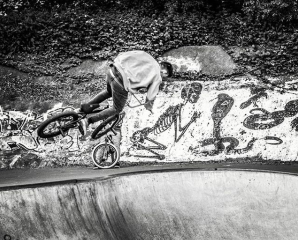

De letters BMX staat voor Bicycle Motorcross. Je kunt met een BMX bijvoorbeeld hoge snelheden mee halen en allerlei trucs op uithalen. Deze fiets valt dan ook onder de sportfietsen en de sport onder de Xtreme sport. Freestyle is een van de bekendste vormen van Extreme Sports onder de BMX-fietsen. Je kunt deze onderverdelen in vijf disciplines: Street, Park, Vert, Dirt en Flatland.
